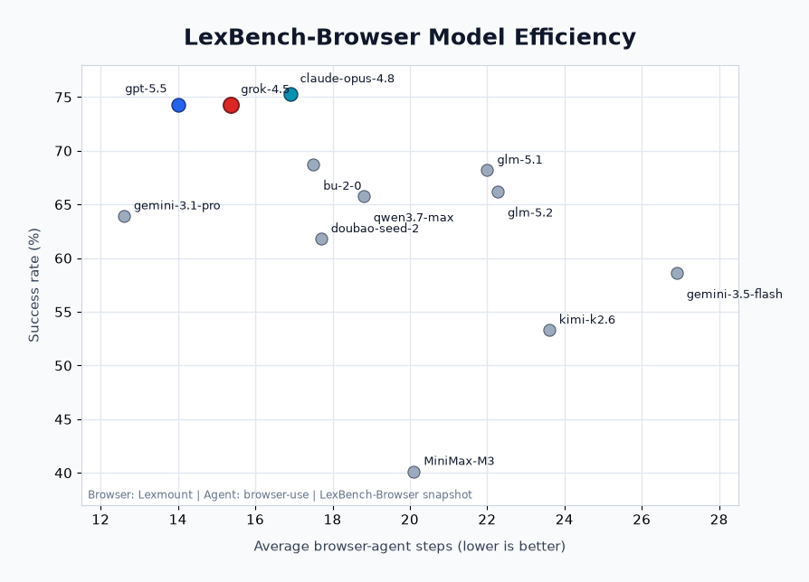

Lexmount · Open Benchmark
LexBench-Browser
A real-world browser-agent benchmark with long-tail, multilingual web tasks and a deterministic stepwise judge.
A real-world browser-agent benchmark with long-tail, multilingual web tasks and a deterministic stepwise judge.
LexBench is not just another dataset — it is a benchmark series and evaluation infrastructure for real-world Agents. The platform is built around four orthogonal, pluggable axes, so that any layer can be swapped or replaced without touching the rest. Results stay reproducible, comparable and ablation-friendly.
BaseAgent contract. browser-use, skyvern, Agent-TARS,
deepbrowse, openai-cua, claude-code — same protocol, fair comparison.
LexBench-Browser is a live-web benchmark for realistic browser-agent workflows across Chinese and English websites. It covers information retrieval and state-changing task execution, including authenticated and safety-sensitive scenarios that prior benchmarks often under-represent.

The system is organized as four layers — CLI, Execution, Data & Evaluation, and Output — with five pluggable modules concentrated in the middle two layers. Agents, models, browsers, benchmarks and judge strategies are all selected through configuration; the core flow is fixed.

Each trajectory is judged stepwise by a calibrated LLM judge. Final tasks pass when the step-aligned score crosses a per-task threshold declared in the dataset. All judge prompts, step screenshots and per-task scores are saved alongside the run for full reproducibility.

Four open agent integrations ship in the runner today, each registered with a single
decorator on a BaseAgent subclass. Adding a new one is roughly ten lines.
BaseAgent, register with
@register_agent("name"), and the runner will spawn it inside its own
uv environment via --extra <agent>.
LexBench-Browser is most useful when teams can reproduce each other's results and compare new agents under the same protocol. The fastest way to contribute is to add a run, an integration, or a benchmark proposal that others can verify.
bubench run --agent browser-use --data LexBench-Browser --mode first_n --count 3
and share the run directory when reporting results.
BaseAgent adapter, register it once, and compare it against
the same browser backends and judge settings.
Snapshot results for LexBench-Browser. The model view compares browser-use across 14 models; the agent view compares five agents on the public 210-task split; the browser view compares three cloud browser backends on the 92-task global split. Click any header to sort.

| # | Agent | Model | Browser | Pass | Fail | Total | Success % | Avg steps | Avg e2e (s) |
|---|---|---|---|---|---|---|---|---|---|
| 1 | browser-use | dmx-claude-opus-4-8-thinking |
Lexmount | 158 | 52 | 210 | 75.3 | 16.9 | 522.4 |
| 2 | browser-use | gpt-5.5 |
Lexmount | 156 | 54 | 210 | 74.3 | 14.0 | 212.0 |
| 3 | browser-use | grok-4.5 |
Lexmount | 156 | 54 | 210 | 74.3 | 15.4 | 132.2 |
| 4 | browser-use | gpt-5.6 |
Lexmount | 155 | 55 | 210 | 73.8 | 13.5 | 292.7 |
| 5 | browser-use | kimi-k3 |
Lexmount | 152 | 58 | 210 | 72.4 | 14.7 | 515.6 |
| 6 | browser-use | bu-2-0 |
Lexmount | 144 | 66 | 210 | 68.7 | 17.5 | 323.8 |
| 7 | browser-use | glm-5.1 |
Lexmount | 143 | 67 | 210 | 68.2 | 22.0 | 589.7 |
| 8 | browser-use | glm-5.2 |
Lexmount | 139 | 71 | 210 | 66.2 | 22.3 | 697.9 |
| 9 | browser-use | qwen3.7-max |
Lexmount | 138 | 72 | 210 | 65.8 | 18.8 | 487.6 |
| 10 | browser-use | gemini-3.1-pro-preview |
Lexmount | 134 | 76 | 210 | 63.9 | 12.6 | 368.6 |
| 11 | browser-use | doubao-seed-2-0-pro |
Lexmount | 130 | 80 | 210 | 61.8 | 17.7 | 595.3 |
| 12 | browser-use | gemini-3.5-flash |
Lexmount | 123 | 87 | 210 | 58.6 | 26.9 | 376.4 |
| 13 | browser-use | kimi-k2.6 |
Lexmount | 112 | 98 | 210 | 53.3 | 23.6 | 433.4 |
| 14 | browser-use | MiniMax-M3 |
Lexmount | 84 | 126 | 210 | 40.1 | 20.1 | 584.5 |
Same benchmark, split, Lexmount browser backend, 900s timeout, and gpt-4.1
stepwise judge. Main-agent report generated on 2026-07-14.
| # | Agent | Model | Browser | Pass | Fail | Total | Success % | Avg steps | Avg e2e (s) |
|---|---|---|---|---|---|---|---|---|---|
| 1 | Hermes | gpt-5.5 |
Lexmount | 174 | 36 | 210 | 82.86 | - | 184.4 |
| 2 | Codex | gpt-5.5 |
Lexmount | 171 | 39 | 210 | 81.43 | - | 254.4 |
| 3 | browser-use | gpt-5.5 |
Lexmount | 156 | 54 | 210 | 74.3 | 14.0 | 212.0 |
| 4 | Claude Code | gpt-5.5 |
Lexmount | 156 | 54 | 210 | 74.29 | - | 228.4 |
| 5 | Cursor | gpt-5.5 |
Lexmount | 153 | 57 | 210 | 72.86 | - | 211.8 |
| 6 | OpenClaw | gpt-5.5 |
Lexmount | 144 | 66 | 210 | 68.57 | - | 476.0 |
Same browser-use agent, gpt-5.4 model, 600s timeout, vision off,
and gpt-5.4 stepwise judge on the 92-task global split. Browser report generated
on 2026-07-16.
| # | Agent | Model | Browser backend | Pass | Fail | Total | Success % | Avg steps | Avg e2e (s) |
|---|---|---|---|---|---|---|---|---|---|
| 1 | browser-use | gpt-5.4 |
Lexmount | 60 | 32 | 92 | 65.2 | 17.2 | 182.3 |
| 2 | browser-use | gpt-5.4 |
Browser Use Cloud | 58 | 34 | 92 | 63.0 | 13.8 | 273.3 |
| 3 | browser-use | gpt-5.4 |
Browserbase | 54 | 38 | 92 | 58.7 | 16.0 | 258.4 |